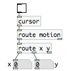
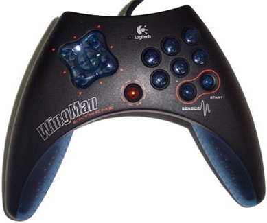
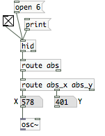
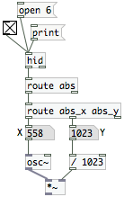
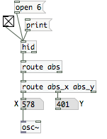
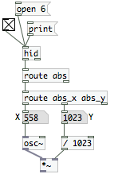
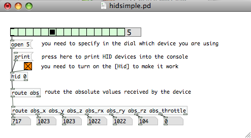

Game Controllers
First, download the patches for this chapter: GameControllers.zip
There are many off-the-shelf Human Interface Devices (HIDs) which can serve as performance controllers. Most game controllers perform quite well in live performance since they were designed for fast paced video games. Gaming mice and joysticks and graphics tablets are especially good controllers. These types of devices can be used with Pd with very good accuracy.
Start with the Keyboard
The most basic game controller is the keyboard, and basically every computer has one, so its a good place to start learning about how to use game controllers with Pd. Pd comes with a set of very simple objects for getting the key press information: [key], [keyup], and [keyname]. In the example below, you can see the result of pressing and releasing the "Escape" key.

Let's start with [key] and its partner [keyup]. [key] outputs when the key is pressed down, and [keyup] outputs when the key Both of these have a single outlet which outputs a number based on which key was used, so here "Escape" has a key number of 27. This key number is based only on the position of the key, not the letter it types. This is useful since there are many keyboard layouts for different languages and countries.

So we can now attach messages to the [select] boxes to make the space bar (key number 32) control a noise burst, and the Escape key (key number 27) control a 250 Hz sine wave. We make [key] send a 1 to make the [noise~] output sound to the [dac~], then [keyup] sends a 0 to turn off the noise.

So that illustrates the most basic way of getting data from the keyboard. It is useful for many things, like turning the DSP on and off, creating the [gemwin], or toggling different parts in a performance patch. You could all of the keys to make a laptop piano.
Mouse Cursor
Basically every computer has a mouse that controls a little arrow on the screen. This little arrow is the mouse cursor. In Pd, we can get information about that mouse cursor using the [cursor] object. One piece of information that is fun to play with is the position of the cursor on the screen, called the x, y coordinates. When you bang the [cursor] object, it will output the current information about the position of mouse pointer. The "motion" message gives us the x, y coordinates. The message looks like "motion x 361" where 361 is the x position in pixels, or there is also "motion y 237" and 237 is the y position in pixels. If you use [print] you can see the "motion" messages in the Pd window.

Right now, we are only interested in the "motion" information, so we are going to use [route] to get just the "motion" messages from the first outlet on [cursor]. To get updated position information automatically, we can "turn on" the [cursor]. It has a built-in clock, so you can turn it on just like [metro]. The difference is when you turn on [metro] you get regular bangs, when you turn on [cursor] you get regular information about the mouse cursor and mouse buttons. A few [route] objects will sort this information to get just the x, y position off the cursor on the screen. The [route motion] sorts out just the messages related to the mouse motion, or x, y position. Then [route x y] sorts out the x and y positions to separate number boxes so that we can see them.

So now we have two floats to work with, perfect for controlling the frequency of two [osc~] sine wave oscillators. Create two [osc~] objects, then connect one float to each, then connect both [osc~] objects to a [dac~] to output the sound to the speakers. Be sure to turn on the DSP audio computation, and you can now control these two oscillators with the mouse!

USB HID
You can also use just about any HID, such as joysticks, digitizer tablets, gamepads and ‘stomp-pads’ are widely available and inexpensive. Most of these HIDs are well built but not expensive, since they are made for the mass game market. The HIDs that are designed for "gamers", serious video gamer players, are very good quality but can cost quite a bit more.

Plug your USB joystick or gamepad into your computer, for example, and they will be recognized by your operating system as HID devices. Pd can get data from HID devices that your operating system recognizes using the [hid] object. For this example, we are going to start with a gamepad. This one is called the Logitech WingMan Gamepad Extreme, it is old so you can buy it for less than US. It is more fun than your average gamepad because it had a tilt sensor in it.
![sending a print message to [hid]](_booki/pure-data/static/PureData-GameControllers-hid_print-en.png "hid_print")
Start by creating an [hid] object and see what it finds. Send the "print" message to [hid] to get the list of HID devices that the operating system recognizes. We are looking for Device 6: 'Logitech Inc.' 'WingMan Gamepad Extreme' version 259 @ location 0x1a200000, the name matches the name of the gamepad above.
The gamepad is device 6, so send [hid] the "open 6" message. Then create a "toggle" from the "Put" menu, hook it up to the left outlet of the [hid] object. [hid] has two outlets: data comes out of the left outlet and status messages come out of the right outlet. We want the data, so we are only going to use the left outlet for now. Create a [print] and attach the left outlet of [hid] to that [print]. Now we are ready to see some data in the Pd window, turn on the toggle and you should see a lot of data when you move the gamepad and press buttons. NOTE Make sure you select your (device #) before turning on the toggle switch in order for it to work properly.

Now we can do something a lot more fun, let's make a simple instrument. We can make the left-right X axis of the gamepad control the frequency and the back-forth Y axis control the amplitude. We need to understand a little about the messages coming out of the left data outlet to use them. The data messages that come out of the left outlet of [hid] always have three parts: "type", "element", and "data". A message representing the gamepad's left-right X axis might look like "abs abs_x 254" or "abs abs_x 3". So we need to [route] those messages to get just the numbers. Then hook up some number boxes to see the numbers change.

Now, the last step is the best, we get to make some noise. This example uses an [osc~] but you can use any synthesizer that you want, or even movie players, 3D shapes, or whatever else you can control using numbers. After all, once you have a number in Pd, it is just a number no different than any other, and you can use that number to control anything else. So we can use the X value directly to control the frequency, so hook that up to the left inlet of the [osc~]. Then create a [*~] to control the amplitude. For amplitude we want a number between 0 and 1. This gamepad has a maximum value of 1023, you can find that out by moving the gamepad around and watching the numbers. So we will divide the Y value using [/ 1023]. Then connect the [/ 1023] to the right inlet of the [*~]. Last, create a [dac~] to output the sound to the speakers, and connect the outlet of the [*~] to the [dac~]. Turn on the DSP, and you have a simple instrument!
![use [route] to isolate the x,y data](_booki/pure-data/static/PureData-GameControllers-gamepad_instrument1-en.png "gamepad_instrument1") 
![connect the [dac~] and turn on the audio DSP!](_booki/pure-data/static/PureData-GameControllers-gamepad_instrument4-en.png "gamepad_instrument4")
What do "abs", "rel", and "key" mean?
Any data message from [hid] that has "key" as its first element means that it is a button or key of some kind. This includes keyboard keys, mouse buttons, joystick buttons, etc. The X,Y,Z and other axes are often labeled as "abs", which is short for "absolute". That means that a given left-right position of the gamepad will always have the same value. So it is an "absolute" measurement of the position. There is another kind of data that is in contrast to the absolute "abs" data, it is "relative", which [hid] calls "rel". A mouse outputs relative data, for example. Each time it outputs data about the left-right X position, it reports how much it moved since the last time it sent the X position. So it tells you the "relative" position of the mouse, it is always "relative" to the last time the mouse sent data.
Make Your Own HID
It´s possible also to build a custom USB HID device with a microcontroller and few more parts to plug analog sensors to it and then send the data to pd. This is a USB HID board called "minia" based on the microcontroller atmega 8:

and this is the USB HID controller finished with infrared sensors, accelerometer, potentiometers, and pushbuttons.

HID It´s also the protocol used to transmit the data of the sensors, buttons, etc, through the usb cable and also via bluetooth or infrared...
One of the advantages of this protocol is that is "plug&play" by definition and most of the USB HID devices doesn´t need any drivers to work.
Another good thing about HID protocol is that it´s optimized for usb, so is faster and easier to use respect to other protocols like "serial" that requires more complex hardware and it´s own drivers.
HID to Pd
To read HID data from a device in pd there are several possible objects. we can use the object [hid] in linux / osX and [hidin] in windows.
Before opening pd, we should plug the device, otherwise this probably will not show up..
To "inspect" for HID devices (internal and connected to the usb) we send the message "print" to the object [hid] and then, we can see in the console which HID devices are detected with pd
NOTE: In some computers, there are small electrical differences between the USB plugs so sometimes, if a USB HID device doesn´t show up, we can solve this by changing the plug and restarting pd.
To "inspect" for HID devices (internal and connected to the usb) we send the message "print" to the object [hid] ([hidin] in windows) and then, we can see in the console which HID devices are detected.
We can see here also that pd assigns a number to each device.
this number is used to select which HID device we are going to use to get data.

This device "5" (xxxxx-avr) is that USB HID device with sensors and potentiometers that we can see in the other picture.
